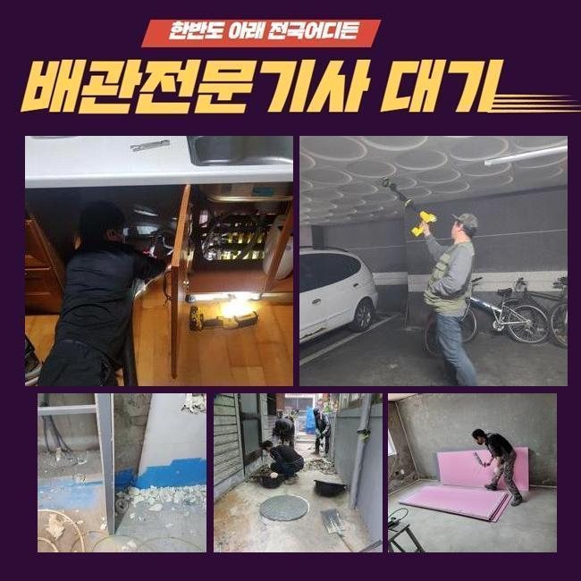
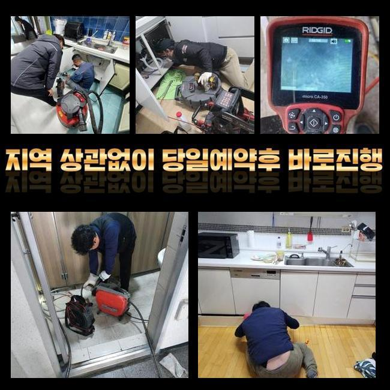
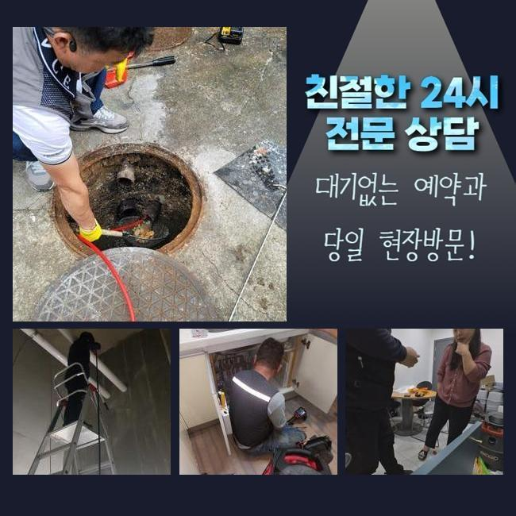
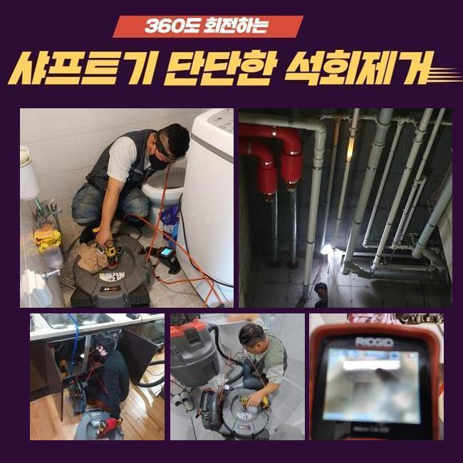
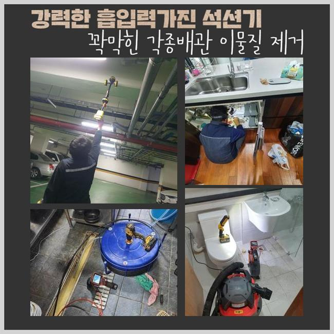
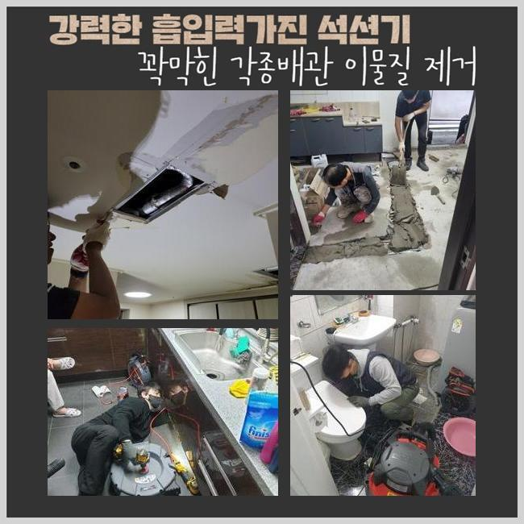

🏠 노원구 하계동세탁실뚫음 중계동 배관뚫기 부속수리
용인 하수구막힘 전문 시공 후기

📋 작업 개요
- 위치: 용인
- 서비스 유형: 하수구막힘, 배관막힘, 누수수리, 역류해결, 뚫는업체, 고압세척, 악취차단
- 작업 일시: 2025. 3. 28. 12:41
- 업체명: 하수구수사대 (010-5615-2118)
🔍 문제 상황
노원구 하계동세탁실뚫음 중계동 배관뚫기 부속수리
하수관이 차단되는 사태는 누구나 한번씩은 경험하셨을거라 생각하는데요
특히 욕실 및 개수대에서 발현되는 배수관 정체는 평범한 삶에 커다란 지장을 유발하고 있답니다
그럼 주방시설에선 왜 막힘이 발현되는 걸까요
주방시설은 요리할때 발생되는 음식물의 잔재나 미세한 수세미 파편들이 관로에 누적돼 막힘이 일어나요
그러한 사태가 계속되면 물빠짐이 안되는건 기본이고 고약한 냄새까지 퍼지며 노폐물들로 인해 관로가 노화되어서 더욱 커다란 트러블을 촉발할수 있어요
어떤 분들은 이런일이 생겼다면 배관을 도구로 분해해서 처치해나가시려 하시죠
그렇지만 그런 방안은 짧은 시간의 사용만 유지하게 만들어줄뿐 근원적인 트러블을 처리하지않으면 동일한 정황이 재발할수 있어요
이물질이 관로 하부에 있다면 일반인이 쉽게 목도하거나 처리하기 힘겹기 때문이랍니다
그것에 더하여 어설프게 장비를 사용하는경우에 외려 사태를 악화되게 만들어 잔재들을 적절히 소멸시키지 못할수가 있죠
그렇기 때문에 하수관이 막히게 되면 전문가에게 의뢰하여 분명하고 깔끔하게 정리하는게 합당합니다

🔎 원인 분석
💡 전문가 진단: 정밀 진단 장비를 사용하여 슬러지의 고착 여부를 판명하고 타격/세척 작업을 실시했습니다.
일주일전에 저희팀은 하수관막힘 관련 수선의뢰를 받았는데요
고객께선 욕실에서 생긴 배수관정체로 역류 및 악취발생이 심하여 일상에 곤란함을 경험하고 있으셨답니다
냄새가 너무 심해서 일상을 영위하기가 어려웠고 역류까지 일어나 많은 곳이 오염되는 상황까지 닿게 됐다 말하셨습니다
의뢰인의 시급한 사태를 고려해서 곧장 고객님댁으로 이동했어요
현장으로 이동후 의뢰자와 상담하고 사태를 상세하게 파악하였어요
고객께선 욕실에서 하수가 빠져나가지 못하고 거꾸로 솟아오르는 모습까지 생겨나 내부공간이 오손된 상황이라면서 빠른 해결을 원하셨죠
한달전부터 미세한 막힘현상이 목견되었는데 방치하는 바람에 더 악화되었다고 하십니다
이럴때에는 간단히 뚫음을 실행하는것으론 사태를 해소하기 어렵답니다
오염물질이 배수관에 단단하게 접착된거라 내측의 상황을 정밀하게 분석하고 적합한 기기와 방식을 토대로 시공에 나서야 하겠습니다
깊숙한 위치에서 생긴 문제들은 직관적으로 검증하기 까다롭죠
그러므로 저희들은 배관내시경을 활용해 배수관내측의 정황을 정밀하게 검사하게 되었던거죠
배관카메라로 확인하니 하수관 내측엔 상당기간 누적된 음식쓰레기와 기름때들이 엉겨서 관로를 철저하게 가로막는 상황이었어요

🔧 작업 과정
또한 침전물들이 견고하게 자리를 잡아서 단순하게 물세척만해서는 정리가 힘들었죠
진단을 끝낸다음에 분쇄기기를 이용해서 관내에 체류하는 잔재들을 처치하는 시공을 속행하였습니다
이 분쇄기기는 관로내부에 적체된 이물들을 효율적으로 부수고 소멸시킬수 있기 때문에 안쪽의 기름슬러지가 움직이지 않는 상황에서 지대한 영향력을 끼치죠
샤프트기기는 회전능력을 통하여 찌꺼기들을 부숴서 하수관에 부착된 단단한 석회물질이나 기름슬러지를 적절하게 소멸시킬수 있어요
다만 너무 강력한 힘으로 파쇄해 나간다면 하수관이 망가질수도 있기에 전문적 테크닉과 섬세한 업무가 필요합니다
본 지점은 또한 침전물들이 배관에 단단히 접착된 상황이었기에 한두번의 작업으론 제거하기 어려웠죠
주변에 붙은 석회물질들은 더더욱 이런 사태를 어렵게했고요
그렇기에 저흰 고압세척장비와 스케일러 기기를 동시에 사용하면서 잔재들을 소제하고 적절하게 제거하는 작업을 수행하였죠
강력한 힘으로 이물들을 없앨때는 그것들이 주위로 퍼지지 못하게끔 주의를 기울여야 해요
찌꺼기들이 분사되어 주변환경이 매우 더러워진다면 정리하기 힘들어질수도 있기 때문에 집중해서 작업해나가야 하는거죠
그렇기 때문에 시공하는 과정에서 이러한 상황을 방지하려 보양업무를 선행했으며 고객님이 우려하지 않으시도록 세심하게 과정을 시행하였죠
슬러지를 소멸시키고 거듭 내시경기기를 넣어 하수관을 관찰하였어요
내측에 잔류하는 찌꺼기나 부가적인 트러블을 체크하는건 무척 중요하다 말씀드릴수 있죠
금번의 업무에서는 수회 하수관 곳곳을 진단하며 연계하여 일어날 가망이 큰 고장상황을 사전적으로 막았습니다
이물들이 전면적으로 정리된걸 파악한뒤에 생활하수를 부으면서 배수성능이 돌아왔는지 시험하였습니다
빠르게 소멸되는 모습을 직각적으로 파악하였습니다
배수구로 하수가 순조롭게 흘러가는 정황을 고객님도 직관하셨으며 완전하게 고쳤다는걸 확인했어요
상황을 방치하여 이물들이 더욱더 늘어난다면 주변이웃들에게 고장상황이 전가될수도 있어요
그러면 고쳐야할 요소가 더더욱 증가할수 있어서 미리미리 진단을 받아보시는게 좋아요


✅ 작업 완료
거기에 더해 하수구막힘은 평상시의 생활에 고충을 발생시키므로 가급적이면 재빠르게 처리해야 돼요
하수관 정체가 증대된다면 구린내가 올라오는것을 포함해서 배관손상으로 야기된 누수증상까지 나타나기 쉽다는걸 기억해야 합니다
시공전엔 꼭 적합한 장비들을 소지해두어야 하겠습니다
안 그러면 진단을 올바르게 못할수가 있으며 고장이 또 생길수가 있답니다
해당 사태들로 진단이 필요하다면 아무때라도 저희측에 전화해 주세요



⚠️ 베란다 누수 및 방수 관리 방법
- ✅ 비가 많이 올 때 창틀 주변이나 아래층 천장에 얼룩이 생기는지 정기적으로 확인해 보세요.
- ✅ 우수관 주변 실리콘 마감이 들뜨거나 깨진 틈새가 있는지 손상 여부를 수시로 체크하세요.
- ✅ 베란다 바닥 타일의 줄눈(메지)이 소실되면 그 틈으로 물이 침투하여 누수가 유발됩니다.
- ✅ 누수 의심 증상 발견 시 방치하면 아래층 손실이 커지므로 즉시 전문가의 진단을 받으십시오.
💡 핵심 정리
- 확실한 장비 작업(내시경 점검 및 샤프트 스케일링)으로 원인을 뿌리 뽑습니다.
- 작업 후 1년 이내에 동일한 부위 재발 시 100% 무상 A/S 서비스를 보장합니다.
- 서울 · 경기 · 인천 전 지역에 24시간 언제든 긴급 출동할 수 있도록 항시 대기 중입니다.
❓ 자주 묻는 질문 (FAQ)
🚨 용인 하수구막힘 문제로 고민이신가요?
정확한 원인 진단과 확실한 시공으로 재발 없는 해결을 약속드립니다.
24시간 긴급 출동 | 서울 · 경기 · 인천 전지역 | 1년 내 재발 시 무상 A/S